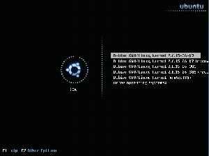

Gfxboot
Archivierte Anleitung
Dieser Artikel wurde archiviert, da er - oder Teile daraus - nur noch unter einer älteren Ubuntu-Version nutzbar ist. Diese Anleitung wird vom Wiki-Team weder auf Richtigkeit überprüft noch anderweitig gepflegt. Zusätzlich wurde der Artikel für weitere Änderungen gesperrt.
Artikel für fortgeschrittene Anwender
Dieser Artikel erfordert mehr Erfahrung im Umgang mit Linux und ist daher nur für fortgeschrittene Benutzer gedacht.
Achtung!
Gfxboot funktioniert nicht:
mit dem ab Ubuntu 9.10 Karmic Koala standardmäßig verwendeten Nachfolger GRUB 2
in Verbindung mit einem passwortgeschütztem Eintrag. Es bootet weiterhin das normale GRUB mit einem entsprechendem Hinweis.
mit
ext4-Partitionen. Die Installation von GRUB bricht mit einer Fehlermeldung ab. Es muss mind. grub-gfxboot_0.97-40_<Architektur>.deb oder neuer verwendet werden.
Mit dem in den offiziellen Ubuntu-Quellen enthaltenen Paket gfxboot werden Themen erstellt, es handelt sich nicht um einen Bootmanager.
Zum Verständnis dieses Artikels sind folgende Seiten hilfreich:
Mit Gfxboot erhält man das aus openSuse bekannte animierte GRUB-Menü.
Achtung!
Diese Anleitung kann beim geringsten Fehler zu einem nicht mehr bootbaren System führen!

Installation¶
Folgende Dinge werden benötigt:
Das Paket grub-gfxboot_0.97-11_i386.deb. Dabei handelt es sich um eine GRUB-Version mit Gfxboot-Erweiterung. Das Paket kann über Kanotix
 heruntergeladen werden. Dort gibt es auch eine 64-Bit-Version.
heruntergeladen werden. Dort gibt es auch eine 64-Bit-Version.
ein passendes Thema
Das Bildschirmfoto zeigt das Thema "message.blusplash". Eine größere Auswahl an Themen gibt es bei gnome-look.org oder hier und kde-look.org .
Hinweis!
Fremdpakete können das System gefährden.
Konfiguration¶
Den vorhandenen GRUB deinstallieren
Das Paket grub-gfxboot_0.97-5_i386.deb installieren [2]
Das heruntergeladene Theme (hier: blusplashgfxboottheme.zip) entpacken [3]
Die entpackte Datei ins GRUB-Verzeichnis kopieren:
sudo cp -r message.blusplash /boot/grub/
Eine Sicherung der bisherigen menu.lst erstellen:
sudo cp /boot/grub/menu.lst /boot/grub/menu.lst_backup
Nun startet man einen Editor mit Root-Rechten [4] und bearbeitet die Datei /boot/grub/menu.lst. Dort wird an erster Stelle folgendes eingetragen:
gfxmenu /boot/grub/message.blusplash
Eventuelle Einträge zu Splashimages müssen entfernt werden, danach abspeichern
Nun wird GRUB erneut installiert:
sudo grub-install /dev/xdx # das "xdx" steht für die entsprechende Festplatte.
Ist GRUB z.B. im Master-Boot-Record (MBR) der ersten IDE-Festplatte installiert, so lautet der Eintrag also "sda". Ist GRUB im ersten Sektor einer Partition installiert, so lautet der korrekte Eintrag z.B. für die zweite Partition der ersten Festplatte "sda2". Bei einer Parallelinstallation von Windows und Ubuntu wird gfxgrub nach sda installiert, NICHT nach sda1 o.ä.!
Damit ein auch ein späteres Kernel-Update gelingt, muss man nun die Datei /sbin/update-grub in einem Editor mit Root-Rechten [4] öffnen und in der ersten Zeile
#!/bin/sh
durch
#!/bin/bash
ersetzen.
Jetzt startet man den Computer neu und es erscheint das neue Bootmenü
grub-gfxboot wieder entfernen¶
Bei eventuellen Problemen kann man den Bootloader mit fast jeder beliebigen Linux Live-CD wiederherstellen. Eine Anleitung zur Wiederherstellung unter Ubuntu gibt es - je nach GRUB-Version - in den Artikeln:
GRUB (Grub 0.9.x, Grub legacy)
GRUB 2 (ab Ubuntu 9.10 Karmic Koala)

- Erstellt mit Inyoka
-
 2004 – 2017 ubuntuusers.de • Einige Rechte vorbehalten
2004 – 2017 ubuntuusers.de • Einige Rechte vorbehalten
Lizenz • Kontakt • Datenschutz • Impressum • Serverstatus -
Serverhousing gespendet von